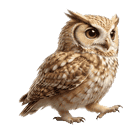
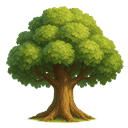
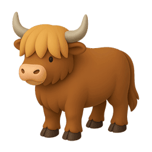
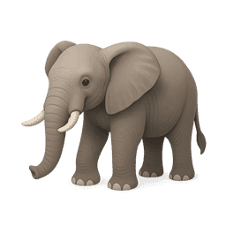
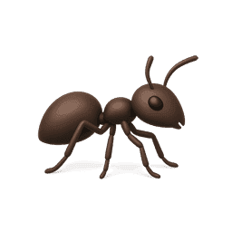

Boi
Elefante

Formiga
Noz
O Desafio do Tico!
A Missão do Tico!
O Mocho Tico precisa da tua ajuda para ouvir as palavras! No seu mundo, há animais, elementos da natureza, objetos e alimentos gigantes com nomes curtinhos, e coisas pequeninas com nomes enormes! Estás pronto para ajudar o Tico a descobrir quais são os nomes mais compridos?

Fantástico!
Chegaste ao fim do caminho mágico!
És um detetive de sons brilhante!
És um detetive de sons brilhante!